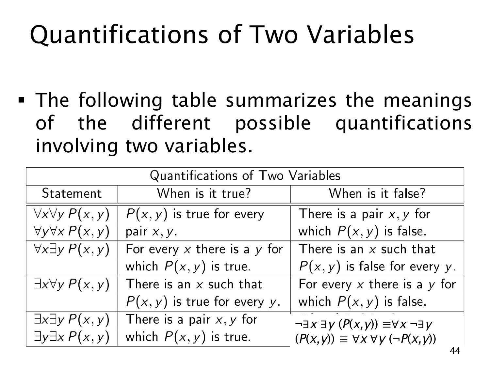

L1.2 · 第 44 页讲解原文
查看这一页课件

两变量量词表：否定“存在一对满足条件”
这页补完表格第四行。∃x∃yP(x,y) 的意思是“论域中至少有一对 (x,y) 使 P 成立”。两个存在量词可换序，因为都只是在寻找某一对对象。
若要否定“至少存在一对”，就必须断言每一对都不满足：
¬∃x∃yP(x,y)≡∀x¬∃yP(x,y)≡∀x∀y¬P(x,y).
第一步说“对每个 x，都不存在适合它的 y”；第二步把“不存在 y”改成“对每个 y 都不成立”。这比只找一对失败的值强得多：一对失败无法排除其他数对可能成功。
例如论域为整数，P(x,y) 表示 x+y=21。任意两个整数之和仍是整数，不可能等于 21。所以 ∀x∀y¬P(x,y) 真，等价地，∃x∃yP(x,y) 假。若只检验 (0,0) 不满足，则还不足以证明后者为假；需要用“整数加法仍为整数”覆盖所有数对。
回看连续四页的表格，四种组合的否定依次为 ∃∃¬P、∃∀¬P、∀∃¬P、∀∀¬P。规律始终是逐层交换量词类型，并否定最内层谓词，而不是颠倒变量的排列顺序。